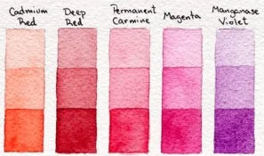

Un poco de historia...
Aunque como tal, la acuarela es una técnica con un par de siglos de existencia, el carácter esencial de la acuarela de “valerse del agua y de colores transparentes” surge desde la prehistoria. Muchas de las antiguas civilizaciones emplearon también pigmentos suspendidos en agua.Se utilizaban éstos para decorar sus muros y su cerámica.Dos mil quinientos años antes de cristo, los pintores del antiguo Egipto empleaban una técnica de acuarela sobre yeso, antecedente de lo que se conocería después como pintura al fresco.Las culturas del mediterráneo, como los Griegos y Romanos, aplicaron también pintura al agua en sus antiguos templos y palacios. La cultura china, responsable de la invención del papel, empleó la técnica de la aguada desde el siglo IV antes de Cristo. Durante el siglo IX los artistas que creaban y decoraban los manuscritos utilizaron acuarelas opacas y traslúcidas. Los pintores florentinos del siglo XV y XVI también utilizaron la acuarela en su variante al fresco. Puede considerarse a Alberto Durero (1471-1528) el precursor de la acuarela como disciplina artística, sus acuarelas son obras minuciosas, predominaban los paisajes y estudios de la naturaleza. Sin embargo su obra en óleo y grabado fue la que obtuvo mayor renombre.
Galeria

Carta de colores
